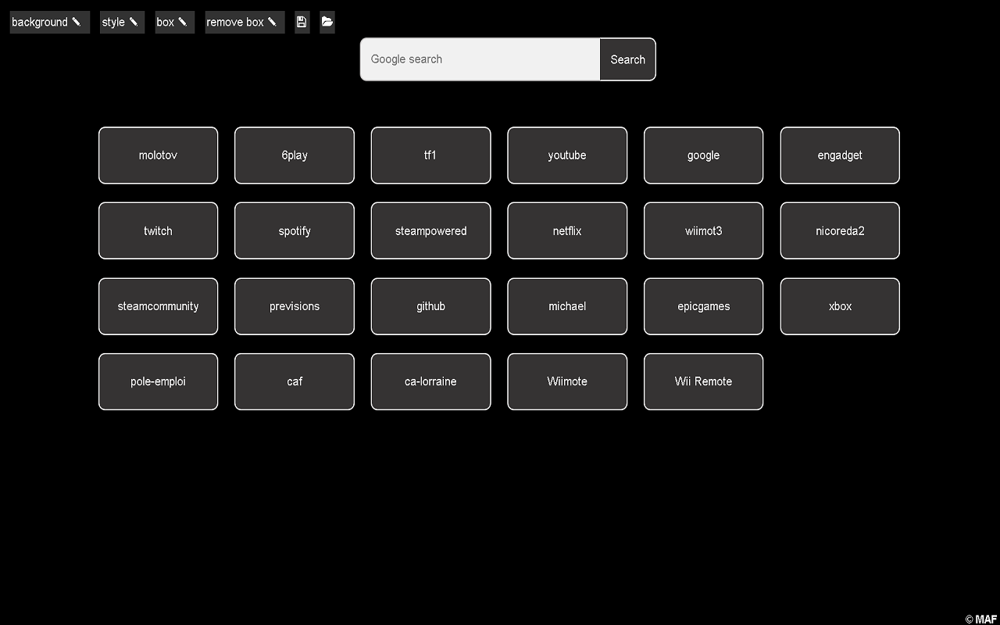

Fast Access
Get to your websites fastly!
It's made to have a list of websites as startup page and new tab page. Edit it by toggle mode with
right click opening a menu. You can fastly access websites with boxes. You can set the websites and name
of the websites with easy edit. You can also drag and drop boxes, and changing background color or
picture, etc.

To note, if you encounter issue, simply open a empty file or set to default the background. You can use
google drive to upload a background picture and use directly the link from copy link under google drive
file menu when clicking right on it and choosing share.
Michael Andre Franiatte ©1999-2024